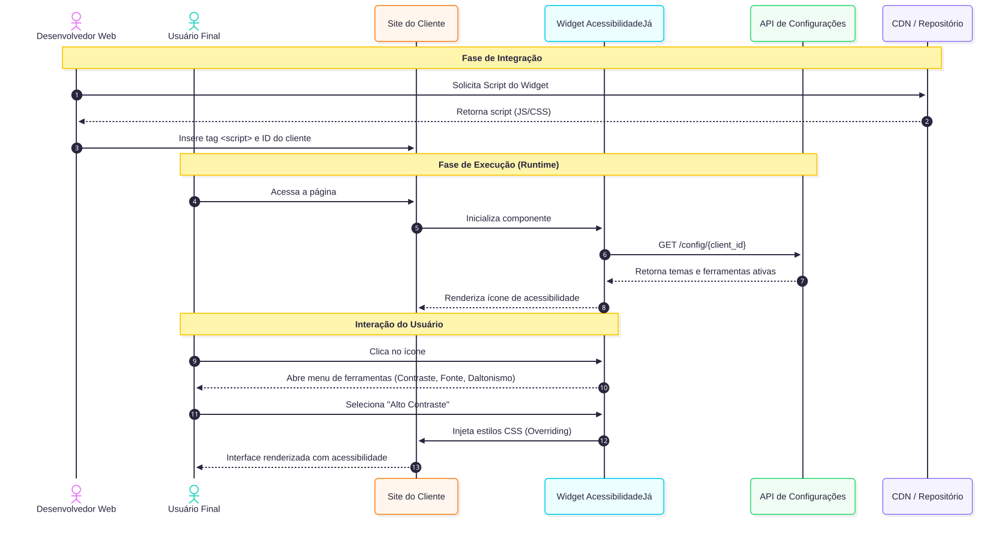
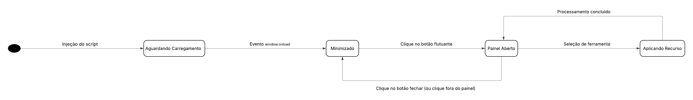
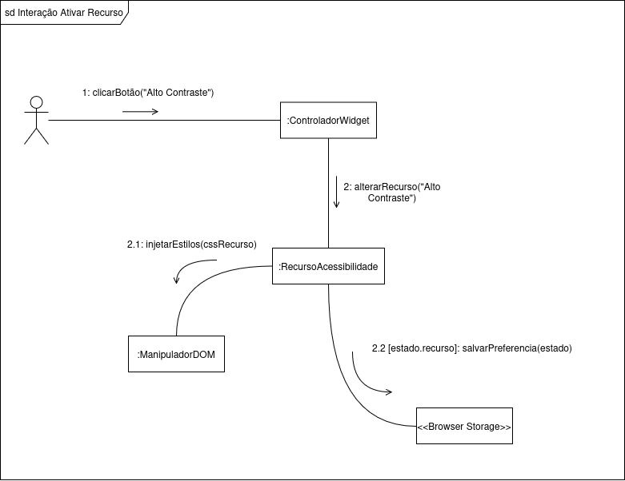
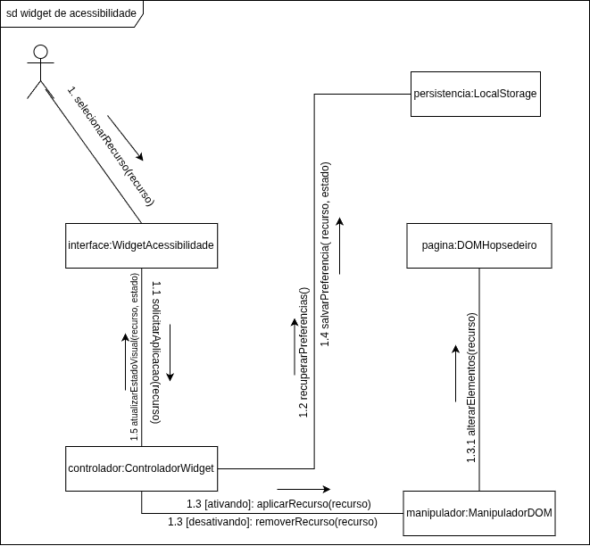

2.2. Módulo Notação UML – Modelagem Dinâmica
Introdução
Para descrever como o sistema se comporta em tempo real e reage às ações do usuário, aplicamos a modelagem dinâmica da UML. Optamos por utilizar quatro dos principais diagramas: Diagrama de Sequência, Diagrama de Atividades, Diagrama de Estados e Diagrama de Comunicação/Colaboração.
Metodologia
Para a realização das modelagens, nossa equipe da AcessibilidadeJá se dividiu em quatro grupos: Desse modo, todos conseguem colaborar. A divisão foi feita da seguinte forma: Cada um dos quatro grupos deveria fazer um diagrama.
Diagrama de Sequência
O diagrama de sequência é o artefato UML voltado para representar o comportamento interativo do sistema ao longo do tempo. Ele ordena cronologicamente as mensagens trocadas entre atores e componentes, tornando explícitas as dependências entre etapas e permitindo validar a viabilidade técnica de um fluxo antes mesmo da implementação.
Justificativa da Escolha
A AcessibilidadeJá opera de forma integrada a sites de terceiros: o desenvolvedor incorpora o widget, o usuário final o acessa pelo navegador e o sistema responde às suas preferências em tempo real. Esse modelo de execução distribuída, com múltiplos participantes interagindo em sequência definida, é exatamente o cenário para o qual o diagrama de sequência foi projetado. Ele nos permitiu mapear o fluxo completo de uma sessão — desde a entrega do script até a aplicação dos estilos de acessibilidade no DOM — identificando dependências e possíveis pontos de falha antes do desenvolvimento.
Fluxo Modelado
O diagrama representa o cenário de uso mais crítico do sistema: a ativação de um recurso de acessibilidade pelo usuário final. As interações seguem a ordem abaixo:
- Desenvolvedor → CDN/Servidor: solicita o script do widget; o servidor retorna o arquivo JS/CSS.
- Desenvolvedor → Página: insere a tag
<script>com o ID de cliente na aplicação hospedeira. - Usuário → Página: acessa a página, que inicializa o componente do widget.
- Widget → API: realiza
GET /config/{client_id}para recuperar os temas e ferramentas habilitadas para aquele cliente. - Widget → Usuário: renderiza o ícone de acessibilidade na interface.
- Usuário → Widget: clica no ícone, abrindo o menu de ferramentas (Contraste, Fonte, Daltonismo).
- Usuário → Widget: seleciona "Alto Contraste".
- Widget → DOM: injeta os estilos CSS com override no DOM do site hospedeiro.
- Resultado: a interface é renderizada com as configurações de acessibilidade aplicadas.
Visualização

Versão interativa do diagrama no Mermaid: abrir diagrama
Autoria: Lucas Branco & Matheus Rodrigues. Diagrama criado e renderizado via Mermaid.
Diagrama de atividade
O diagrama de atividade é um modelo comportamental da UML que descreve processos e fluxos de trabalho de forma clara para alinhar as áreas de negócio e desenvolvimento. Utilizando símbolos específicos de início, fim e decisão, ele facilita a comunicação com os stakeholders ao simplificar casos de uso complexos. Seus principais benefícios incluem a demonstração da lógica de algoritmos, a modelagem de arquiteturas de software e a ilustração de interações entre usuários e o sistema. Assim, o diagrama atua como uma ferramenta essencial para organizar processos e melhorar a compreensão funcional do sistema.

Autoria: Fernanda Vaz
Diagrama de Estados
Para complementar a visão estrutural do sistema, este artefato detalha o comportamento dinâmico e o ciclo de vida do ControladorWidget. Em cenários de injeção de código em domínios de terceiros (sites hospedeiros), o controle de estado rigoroso é vital para prevenir falhas críticas, como race conditions e degradação de performance (jank).
Este mapeamento garante previsibilidade à ferramenta através de três pilares fundamentais:
- Sincronismo de Inicialização: O estado de Aguardando DOM blinda o script contra execuções prematuras, aguardando o gatilho nativo do navegador (
window.onload) para garantir que a árvore do DOM esteja pronta para manipulação. - Persistência Reativa: A lógica de decisão baseada em Configurações Ativas permite que o sistema recupere o estado de acessibilidade salvo anteriormente pelo usuário, restaurando a experiência de forma automática e transparente.
- Segurança de Processamento: O estado Aplicando Mudança delimita a janela de manipulação intensiva de estilos e elementos, assegurando que o sistema retorne a um estado de escuta estável (seja ele Minimizado ou Recurso Ativo) apenas após a conclusão das tarefas do
ManipuladorDOM.

Autoria: Dara Maria e Felipe Brandim
Baseado no primeiro diagrama de estados foi criado um segundo diagrama de Estados com todas as funcionalidades descritas e detalhadas. Cada ferramenta opera como uma máquina de estados ortogonal, alternando entre os estados Inativo e Ativo de forma independente, permitindo que múltiplos efeitos se sobreponham simultaneamente na página. As ferramentas simples (Filtro Claro/Escuro, Lupa e Modo Leitura) transitam diretamente para seu estado ativo ao receber ativarUso(), enquanto as ferramentas paramétricas (Tradutor, Alto Contraste, Ajuste de Fonte, Ajuste de Tamanho e Ajuste de Cursor) passam por um sub-estado de seleção antes de aplicar o efeito, recebendo um parâmetro como língua, tipo de contraste ou tipo de cursor. Todas as ferramentas retornam ao estado Inativo através do evento desativarUso(), restaurando a página ao seu estado anterior.

Autoria: Pedro Cruz
Visualização do Ciclo de Vida

Autoria: Dara Maria e Felipe Brandim
Nota: O diagrama formaliza as transições guiadas por eventos do sistema e interações diretas do usuário, garantindo que a interface (UI) e a lógica de acessibilidade operem em harmonia.
Diagrama de Comunicação/Colaboração
O diagrama de comunicação é um modelo dinâmico da UML que representa as interações entre objetos ou componentes em um sistema. Ele destaca as mensagens trocadas e os relacionamentos entre os elementos, facilitando a compreensão do fluxo de comunicação e a identificação de dependências. No diagrama construído foi exemplificado a interação entre o ControladorWidget e o ManipuladorDOM, evidenciando a sequência de mensagens e a colaboração necessária para aplicar as mudanças de acessibilidade no DOM do site hospedeiro. No diagrama, optamos por exemplificar a ativação do recurso de alto contraste, mas a estrutura de comunicação se mantém consistente para os demais recursos.

Diagrama de Colaboração Generalista – Widget de AcessibilidadeJá
Visão Geral
Este diagrama de colaboração representa, de forma abstrata e generalista, como os principais componentes do sistema AcessibilidadeJá interagem para permitir a ativação, desativação e persistência de recursos de acessibilidade.
Participantes da Colaboração
-
Usuário
Inicia a interação ao selecionar um recurso de acessibilidade. -
Widget de Acessibilidade (Interface)
Responsável por intermediar a comunicação entre o usuário e o sistema. -
Controlador do Widget
Coordena o fluxo de execução e gerencia as decisões sobre aplicação ou remoção de recursos. -
Manipulador de DOM
Executa as alterações visuais na interface da aplicação. -
Página (DOM Hospedeiro)
Ambiente onde os recursos de acessibilidade são aplicados. -
Persistência (LocalStorage)
Responsável por armazenar as preferências do usuário.

Autoria: Enzo Fernandes e Fábio Araújo
Histórico de versões
| Versão | Data | Descrição | Autor(es) |
|---|---|---|---|
1.0 |
14/04/2026 | Criação da página | Felipe Brandim |
1.1 |
20/04/2026 | Criação inicial do diagrama de atividades | Fernanda Vaz |
1.2 |
21/04/2026 | Criação do diagrama de estados | Dara Maria Felipe Brandim |
1.3 |
21/04/2026 | Criação do diagrama de sequência e ajustes na página | Lucas Branco |
1.4 |
21/04/2026 | Criação do diagrama de Colaboração | Isaac Batista |
1.5 |
21/04/2026 | Criação do diagrama de Comunicação Generalista | Enzo Fernandes |
1.6 |
21/04/2026 | Criação do texto do diagrama de Comunicação Generalista | Fábio Araújo |
1.7 |
22/04/2026 | Reescrita e detalhamento do texto do diagrama de sequência | Matheus Rodrigues |
1.8 |
23/04/2026 | Criação do segundo diagrama de estados | Pedro Cruz |